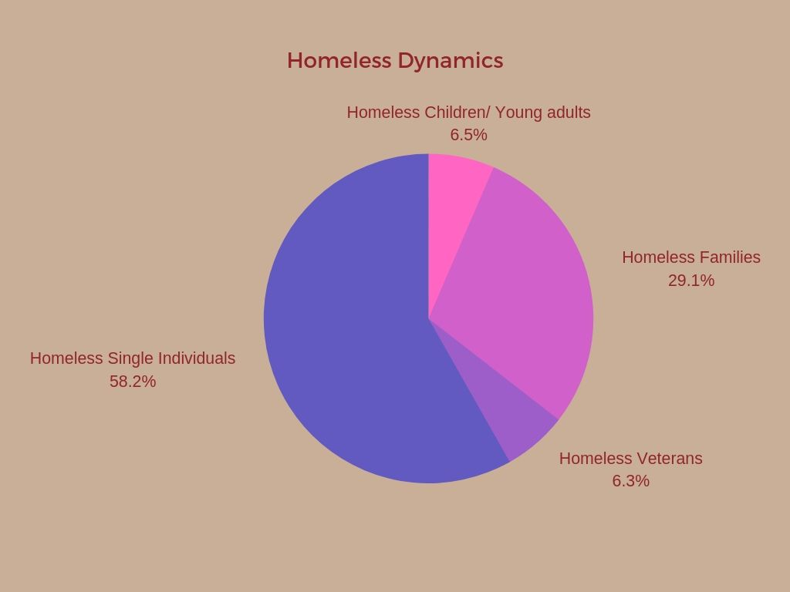

.png)
- Home
- Donations/Volunteer
- How to Help a Homeless Person Get a Job
- Map
- Testimonies/Why Homeless People Can't Get A Job?
Over the years homelesness has been a problem in all countries. In the united states homelessness is a problem that needs to be changed. In the United States there are 554,000 people that are homeless.
In the United States there is estimated to be 553,742 people that are experiencing homelessness. According to the most recent national point-in-time estimate in January 2017. This represents a rate of approximately 17 people experiencing homelessness per every 10,000 people in the general population.
Approximately 34 percent 192,875 people lived in street or an abandoned building. Single individuals 66.7 percent of all people experiencing homelessness 369,081 people, with the remaining 33.3 percent being people in families. There are 184,661 adults and children living in shelters or on the streets. 7.2 percent of homeless were veterans 40,056 veterans, and 7.4 percent are children and young adults 40,799 children and young adults.
